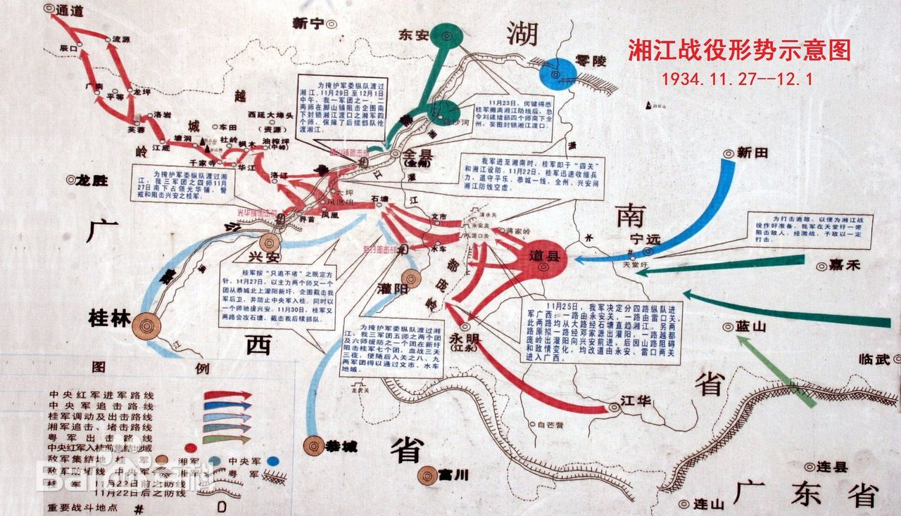

The Xiangjiang Campaign
During the period of the Land Revolution, the Central Red Army was engaged in a critical battle to break
through the fourth line of blockade established by the Kuomintang army in the Xiangjiang region of
northern Guangxi during their Long March.
The Xiangjiang Campaign was a battle that determined the life and death of the Central Red Army. From
November 27 to December 1, 1934, the Central Red Army fought fiercely for five days and nights against
the Kuomintang forces in the mountainous areas of Xing'an, Quanzhou, and Guanyang in Guangxi.

Ultimately, they succeeded in crossing the Xiangjiang River between Quanzhou and Xing'an, thereby
breaking through the fourth line of blockade. This victory thwarted Chiang Kai-shek's attempt to
encircle and annihilate the Central Red Army east of the Xiangjiang River. However, this success came at
an enormous cost. The number of troops and personnel in the Central Committee plummeted from over 80,000
at the start of the Long March to just over 30,000.
The Xiangjiang Campaign was the most heroic and crucial battle since the Central Red Army began its
breakout. Our forces engaged in fierce combat against a numerically superior enemy, ultimately tearing
through the heavily fortified blockade line and dismantling Chiang Kai-shek’s plan to encircle the Red
Army east of the Xiangjiang. Although the Red Army managed to breach the fourth line of blockade, the
price paid was staggering. The 5th Corps and the newly formed International Brigade suffered over fifty
percent losses, while the 8th Corps faced even greater devastation. The 34th Division was heavily
surrounded, and its officers and soldiers fought valiantly until they ran out of ammunition and
supplies, resulting in the heroic sacrifice of the majority of their comrades. After crossing the
Xiangjiang River, the Central Red Army and the two divisions of the Military Commission had dwindled
from 86,000 at the start to just 30,000. This led to widespread doubt and dissatisfaction among many
cadres and soldiers regarding Wang Ming's military strategy, with increasing calls for a change in
leadership.
The bittersweet victory at the Xiangjiang directly resulted in the convening of an expanded meeting of
the Central Political Bureau in Zunyi (historically known as the “Zunyi Conference”). This meeting was
held when the Red Army was besieged and in dire straits, establishing the correct leadership of the new
Central Committee centered around Mao Zedong and affirming Mao's leadership within both the Red Army and
the Central Committee.